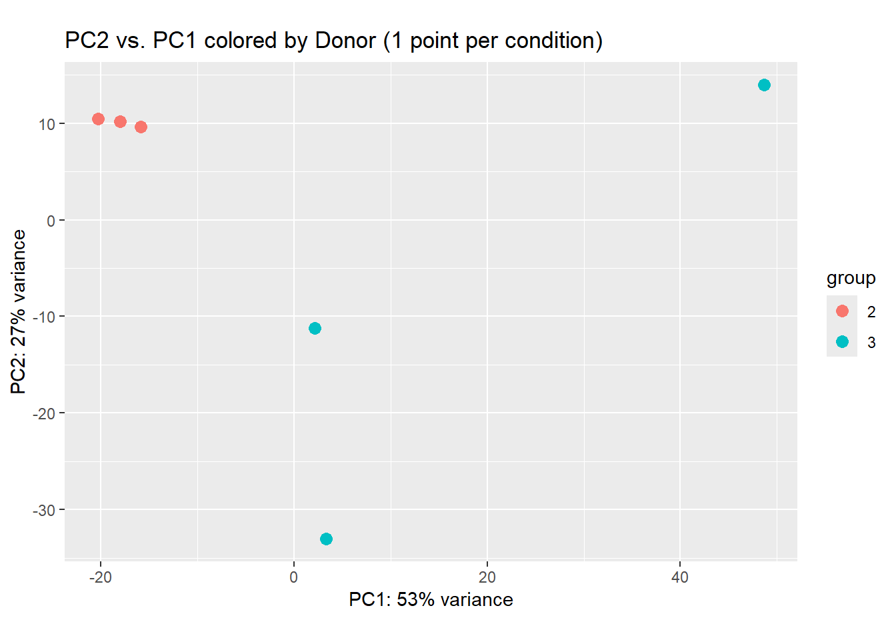
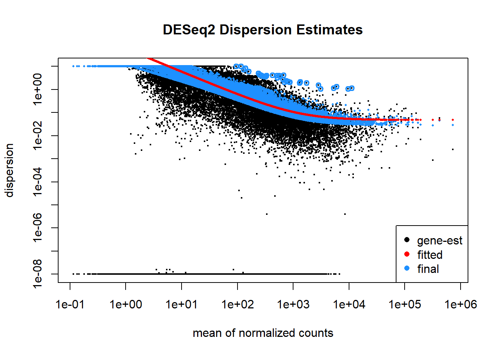
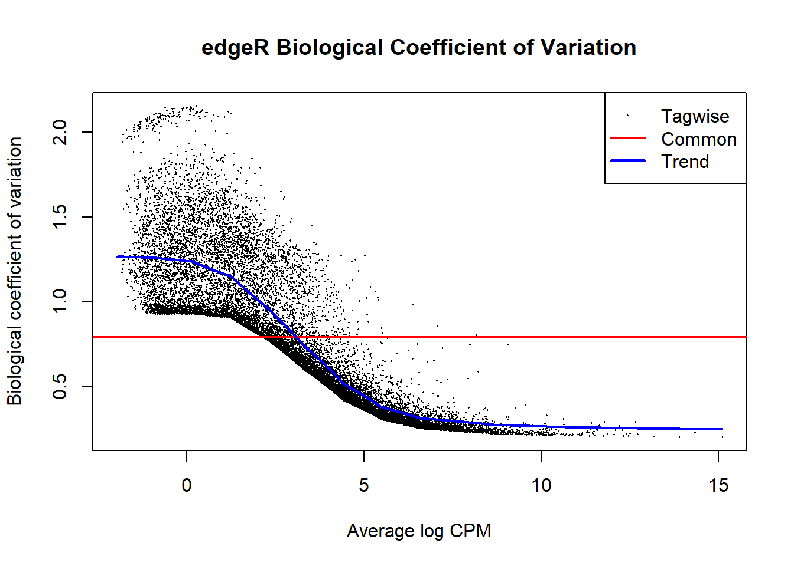

The first stage of this study aims to identify human genes that are significantly deregulated during SARS-CoV-2 infection compared with uninfected (mock) controls. Because individual differential expression (DE) algorithms rely on different normalisation, dispersion-estimation, and hypothesis-testing assumptions, relying on a single tool can introduce method-specific false positives—especially in small-sample transcriptomic datasets. Task 1 therefore establishes a rigorous preprocessing workflow, evaluates differential expression independently using two complementary statistical frameworks (DESeq2 and edgeR), and applies a conservative consensus strategy to select a high-confidence candidate gene for CRISPR guide design in Task 2.
2.2 Approach
Experimental Design and Metadata Extraction
The raw RNA-seq dataset (gse159717_rnaseq_deseq_5dpi_counts_raw.tsv) comprises 60,683 genomic features across six samples collected at 5 days post-infection (5dpi) from two biological donors (Donor 2 and Donor 3) under three conditions: uninfected control (mock), SARS-CoV-2 infected (SARS), and remdesivir-treated (Rem). Sample metadata were parsed directly from the column headers (S_{donor}_{condition}_{time}_{sample_id}), and mock was set as the reference factor level.
Two deliberate modelling choices were made before fitting the statistical models:
Retaining all six samples (mock, SARS, and Rem) during model fitting: Although our biological contrast of interest compares SARS against mock, dropping the two Rem samples prior to model fitting would reduce the residual degrees of freedom from 3 to 1. Retaining all six samples allows both tools to leverage the Rem observations when estimating baseline inter-donor differences and gene-wise dispersion parameters, improving statistical stability before extracting the targeted SARS vs. mock contrast.
Additive paired model design (~ donor + condition): Because each donor was sampled across all conditions, an additive blocking factor for donor was included rather than a simple ~ condition design. Accounting for baseline donor-to-donor transcriptome differences prevents donor variance from inflating the residual error term, thereby increasing statistical power to detect the true condition effect.
Rationale for Selecting DESeq2 and edgeR Over Alternative Algorithms
Several classes of differential expression algorithms exist for RNA-seq data. DESeq2(Love, Huber, and Anders 2014) and edgeR(Robinson, McCarthy, and Smyth 2009) were specifically selected over alternative frameworks for three methodological reasons:
Discrete Negative Binomial modelling vs. normal-approximation transformations (limma-voom): RNA-seq read counts are discrete, non-negative integers that exhibit strong overdispersion (variance exceeding the mean). While limma-voom models log-counts-per-million using precision weights and linear models, benchmark studies show that voom requires larger sample sizes to reliably estimate empirical Bayes variance weights and can lose power or control of the false discovery rate (FDR) when biological replicates are very small (\(n = 2\) donors per group). In contrast, both DESeq2 and edgeR directly model raw counts using a Negative Binomial Generalized Linear Model (GLM), which is mathematically suited to low-replicate count data.
Parametric empirical Bayes shrinkage vs. non-parametric rank methods (NOIseq, SAMseq, Wilcoxon): Non-parametric permutation or rank-based methods avoid distributional assumptions but lack statistical power at \(n = 2\) per group because the minimum achievable p-value from rank permutations is bounded by sample size. DESeq2 and edgeR overcome the small-sample limitation by borrowing information across all genes via empirical Bayes dispersion shrinkage.
Methodological complementarity between DESeq2 and edgeR: Despite sharing a Negative Binomial GLM foundation, DESeq2 and edgeR differ in their normalisation strategies (median-of-ratios vs. Trimmed Mean of M-values [TMM]), low-count filtering (results() independent filtering vs. filterByExpr()), dispersion shrinkage (local regression/MAP shrinkage vs. weighted likelihood empirical Bayes), and hypothesis tests (Wald test vs. Likelihood Ratio Test [LRT]). Combining them tests whether candidate genes are robust to distinct statistical assumptions.
Pre-Filtering and Tool-Specific Normalisation
Of the 60,683 initial genes, 27,356 genes with zero reads across all six samples were removed first, leaving 33,327 expressed genes. Unexpressed genes contain no information on fold change or dispersion, and removing them reduces computational overhead.
Subsequent pre-filtering and normalisation followed each package’s recommended best practices rather than forcing a single identical pre-filter onto both tools, which could bias one model’s dispersion trend:
DESeq2 workflow: Raw counts were normalised using the median-of-ratios method, which scales counts by sample-specific size factors resistant to a small number of highly expressed viral-response genes. Rather than hard-filtering low-count genes prior to dispersion estimation, DESeq2 retains all expressed genes to model the mean-dispersion trend accurately and applies automated independent filtering at the results() stage, using the mean normalised count as a filter statistic to maximise the number of discoveries at \(\alpha = 0.05\).
edgeR workflow: Because edgeR’s TMM normalisation and dispersion estimation are sensitive to sparse low-count features, filterByExpr() was applied first using the ~ donor + condition design matrix to retain only genes with sufficient counts across biological groups. Library sizes were then recalculated (keep.lib.sizes = FALSE) and normalised via Trimmed Mean of M-values (TMM) to correct for sequencing depth and RNA composition bias. Both workflows operate on raw integer counts rather than length-normalised metrics (TPM or FPKM), preserving the count-variance relationship required by the Negative Binomial distribution.
To combine the outputs of DESeq2 and edgeR, each tool’s raw p-values were first adjusted for multiple hypothesis testing using the Benjamini-Hochberg procedure (\(\text{FDR} / p_{\text{adj}} < 0.05\)) to control the expected proportion of false discoveries across thousands of simultaneous gene tests.
A strict intersection with directional concordance was chosen over alternative combination methods (such as taking the union of significant genes, or combining p-values via Fisher’s method):
Intersection vs. Union: A union maximises sensitivity (recall) but retains genes that pass significance in only one algorithm due to tool-specific dispersion or filtering artefacts. Because Task 2 requires selecting a single high-confidence gene for therapeutic CRISPR targeting, minimising false positives (high precision/specificity) is far more important than maximising gene count.
Directional concordance (sign(log2FC_DESeq2) == sign(logFC_edgeR)): Requiring identical fold-change signs ensures that both models agree on whether transcription is upregulated or downregulated—a critical requirement because the direction of deregulation directly dictates whether CRISPRi (repression) or CRISPRa (activation) is deployed in Task 2.
2.3 Findings
Exploratory Quality Control and Dispersion Modelling
Principal Component Analysis (PCA) on regularised log-transformed (rlog) counts confirmed the necessity of the paired ~ donor + condition design (Figure 2.1). The first principal component (PC1) captures 53% of total transcriptomic variance and primarily separates Donor 2 from Donor 3, demonstrating substantial baseline inter-donor variability that would confound an unpaired analysis.

Figure 2.1: Principal Component Analysis (PCA) of rlog-transformed counts across the six samples, coloured by donor.
The mean-dispersion relationship for DESeq2 (Figure 2.2) and the Biological Coefficient of Variation (BCV) for edgeR (Figure 2.3) follow the expected Negative Binomial behaviour: dispersion is highest among low-count genes and decreases smoothly as mean expression rises. Both plots confirm successful empirical Bayes shrinkage toward the fitted trend, stabilising variance estimates despite the two-donor sample size.

Figure 2.2: Gene-wise, fitted, and final shrunken dispersion estimates in DESeq2.

Figure 2.3: Biological Coefficient of Variation (BCV) relative to average log CPM in edgeR.
Individual Tool Results (SARS vs. mock)
Testing the SARS vs. mock contrast at a Benjamini-Hochberg adjusted threshold of \(0.05\) yielded 68 significant differentially expressed genes in DESeq2 (via the Wald test) and 7 significant genes in edgeR (via the GLM Likelihood Ratio Test).
Show analysis code
# DESeq2 Wald test for SARS vs mockres_deseq <-results( dds,contrast =c("condition", "SARS", "mock"),alpha =0.05)# edgeR GLM Likelihood Ratio Test for SARS vs mockfit_edger <-glmFit(y_dispersion, design_matrix)lrt <-glmLRT(fit_edger, coef ="conditionSARS")
Show analysis code
sig_deseq <- deseq_results |>filter(padj <0.05)sig_edger <- edger_results |>filter(FDR <0.05)print(paste0("Significant genes: ", nrow(sig_deseq), " found by DESeq2 and ", nrow(sig_edger), " found by edgeR"))
[1] "Significant genes: 68 found by DESeq2 and 7 found by edgeR"
The discrepancy in total hit counts (68 vs. 7) reflects edgeR’s stricter upfront filterByExpr() step and conservative robust dispersion estimation with glmLRT on two replicates, whereas DESeq2’s Wald test is more permissive for genes with near-zero baseline counts in the mock group.
Consensus Differentially Expressed Genes
Intersecting the two significant gene lists and enforcing fold-change sign agreement yielded 6 high-confidence consensus genes (Table 2.1), representing 6 of the 7 edgeR hits (85.7%) and 6 of the 68 DESeq2 hits.
Table 2.1: Consensus differentially expressed genes (SARS vs. mock, padj/FDR < 0.05) supported by both DESeq2 and edgeR.
gene_id
gene_version
gene_name
gene_biotype
gene_source
location
fold_change_deseq
adj_p_value_deseq
fold_change_edger
adj_p_value_edger
ENSG00000111335
13
OAS2
protein_coding
ensembl_havana
chr12:112978395-113011723:+
9.9
9.69e-10
10.3
0.000169
ENSG00000198932
13
GPRASP1
protein_coding
ensembl_havana
chrX:102651092-102659083:+
10.1
1.28e-05
11
0.000169
ENSG00000272323
1
AC026801.2
lncRNA
havana
chr5:34837549-34839278:-
10.1
0.000532
10.7
0.0186
ENSG00000165949
12
IFI27
protein_coding
ensembl_havana
chr14:94104836-94116698:+
3.82
5.85e-05
3.83
0.0362
ENSG00000197632
9
SERPINB2
protein_coding
ensembl_havana
chr18:63871692-63903888:+
-1.69
0.000175
-1.67
0.0362
ENSG00000169248
13
CXCL11
protein_coding
ensembl_havana
chr4:76033682-76041415:-
6.07
0.000126
6.03
0.0467
Among the six consensus hits:
Five genes are strongly upregulated in SARS-CoV-2 infection:OAS2, GPRASP1, AC026801.2, IFI27, and CXCL11.
One gene is downregulated:SERPINB2 (\(\log_2\text{FC} = -1.69\) in DESeq2; \(-1.67\) in edgeR).
Biotype diversity: Five genes (OAS2, GPRASP1, IFI27, SERPINB2, CXCL11) are protein-coding, whereas AC026801.2 is a long non-coding RNA (lncRNA).
2.4 Discussion & Conclusion
While OAS2, GPRASP1, and AC026801.2 exhibit extreme positive \(\log_2\) fold changes (\(\approx 9.9\text{ to }10.9\)), these magnitudes must be interpreted with statistical caution: GPRASP1 and AC026801.2 have zero raw counts in both mock samples, and OAS2 has almost zero baseline expression (0 and 2 counts). Because unshrunken maximum-likelihood fold-change estimates are reported, near-zero denominators inflate the \(\log_2\) ratio. Furthermore, with only two biological donors, these results establish transcriptomic deregulation within this specific experimental cohort rather than a population-wide clinical estimate.
Nevertheless, the consensus intersection confirms that OAS2, IFI27, and CXCL11—hallmark interferon-stimulated innate immune genes—are robustly induced across both statistical models. From this six-gene consensus set (data/consensus_table.rds), OAS2 is carried forward to Task 2 for systematic evaluation as a CRISPR therapeutic target.
Love, Michael I, Wolfgang Huber, and Simon Anders. 2014. “Moderated Estimation of Fold Change and Dispersion for RNA-Seq Data with DESeq2.”Genome Biology 15. https://doi.org/10.1186/s13059-014-0550-8.
Robinson, Mark D., Davis J. McCarthy, and Gordon K. Smyth. 2009. “<Tt>edgeR</Tt>: A Bioconductor Package for Differential Expression Analysis of Digital Gene Expression Data.”Bioinformatics 26: 139–40. https://doi.org/10.1093/bioinformatics/btp616.
Source Code
# Task 1: Differential Expression Analysis```{r setup}#| include: falselibrary(tidyverse)library(DESeq2)library(edgeR)library(knitr)raw_counts_data <-read_delim("data/gse159717_rnaseq_deseq_5dpi_counts_raw.tsv",delim ="\t",show_col_types =FALSE)```## ObjectiveThe first stage of this study aims to identify human genes that are significantly deregulated during SARS-CoV-2 infection compared with uninfected (`mock`) controls. Because individual differential expression (DE) algorithms rely on different normalisation, dispersion-estimation, and hypothesis-testing assumptions, relying on a single tool can introduce method-specific false positives—especially in small-sample transcriptomic datasets. Task 1 therefore establishes a rigorous preprocessing workflow, evaluates differential expression independently using two complementary statistical frameworks (**DESeq2** and **edgeR**), and applies a conservative consensus strategy to select a high-confidence candidate gene for CRISPR guide design in Task 2.## Approach### Experimental Design and Metadata ExtractionThe raw RNA-seq dataset (`gse159717_rnaseq_deseq_5dpi_counts_raw.tsv`) comprises 60,683 genomic features across six samples collected at 5 days post-infection (`5dpi`) from two biological donors (Donor 2 and Donor 3) under three conditions: uninfected control (`mock`), SARS-CoV-2 infected (`SARS`), and remdesivir-treated (`Rem`). Sample metadata were parsed directly from the column headers (`S_{donor}_{condition}_{time}_{sample_id}`), and `mock` was set as the reference factor level.```{r creating_metadata}col_names <-colnames(raw_counts_data[7:12])col_data <-tibble(row_name = col_names) |>separate_wider_delim( row_name,names =c("prefix", "donor", "condition", "time", "id"),delim ="_",cols_remove =FALSE ) |>select(row_name, donor, condition, id) |>mutate(donor =factor(donor, levels =unique(donor)),condition =factor(condition, levels =unique(condition)) ) |>as.data.frame() |>column_to_rownames(var ="row_name")col_data <- col_data |>mutate(condition =fct_relevel(condition, "mock"))``````{r setup_counts_data}#| include: falsecounts_data <- raw_counts_data |>select(1, 7:12) |>as.data.frame() |>column_to_rownames(var ="gene_id")```Two deliberate modelling choices were made before fitting the statistical models:1. **Retaining all six samples (`mock`, `SARS`, and `Rem`) during model fitting:** Although our biological contrast of interest compares `SARS` against `mock`, dropping the two `Rem` samples prior to model fitting would reduce the residual degrees of freedom from 3 to 1. Retaining all six samples allows both tools to leverage the `Rem` observations when estimating baseline inter-donor differences and gene-wise dispersion parameters, improving statistical stability before extracting the targeted `SARS vs. mock` contrast.2. **Additive paired model design (`~ donor + condition`):** Because each donor was sampled across all conditions, an additive blocking factor for `donor` was included rather than a simple `~ condition` design. Accounting for baseline donor-to-donor transcriptome differences prevents donor variance from inflating the residual error term, thereby increasing statistical power to detect the true `condition` effect.### Rationale for Selecting DESeq2 and edgeR Over Alternative AlgorithmsSeveral classes of differential expression algorithms exist for RNA-seq data. **DESeq2** [@Loveetal2014] and **edgeR** [@Robinsonetal2009] were specifically selected over alternative frameworks for three methodological reasons:* **Discrete Negative Binomial modelling vs. normal-approximation transformations (`limma-voom`):** RNA-seq read counts are discrete, non-negative integers that exhibit strong overdispersion (variance exceeding the mean). While `limma-voom` models log-counts-per-million using precision weights and linear models, benchmark studies show that `voom` requires larger sample sizes to reliably estimate empirical Bayes variance weights and can lose power or control of the false discovery rate (FDR) when biological replicates are very small ($n = 2$ donors per group). In contrast, both `DESeq2` and `edgeR` directly model raw counts using a Negative Binomial Generalized Linear Model (GLM), which is mathematically suited to low-replicate count data.* **Parametric empirical Bayes shrinkage vs. non-parametric rank methods (`NOIseq`, `SAMseq`, `Wilcoxon`):** Non-parametric permutation or rank-based methods avoid distributional assumptions but lack statistical power at $n = 2$ per group because the minimum achievable p-value from rank permutations is bounded by sample size. `DESeq2` and `edgeR` overcome the small-sample limitation by borrowing information across all genes via empirical Bayes dispersion shrinkage.* **Methodological complementarity between `DESeq2` and `edgeR`:** Despite sharing a Negative Binomial GLM foundation, `DESeq2` and `edgeR` differ in their normalisation strategies (median-of-ratios vs. Trimmed Mean of M-values [TMM]), low-count filtering (`results()` independent filtering vs. `filterByExpr()`), dispersion shrinkage (local regression/MAP shrinkage vs. weighted likelihood empirical Bayes), and hypothesis tests (Wald test vs. Likelihood Ratio Test [LRT]). Combining them tests whether candidate genes are robust to distinct statistical assumptions.### Pre-Filtering and Tool-Specific NormalisationOf the 60,683 initial genes, 27,356 genes with zero reads across all six samples were removed first, leaving 33,327 expressed genes. Unexpressed genes contain no information on fold change or dispersion, and removing them reduces computational overhead.```{r}#| include: falsegenes_to_remove <-rowSums(counts_data) ==0counts_data <- counts_data[!genes_to_remove, ]```Subsequent pre-filtering and normalisation followed each package's recommended best practices rather than forcing a single identical pre-filter onto both tools, which could bias one model's dispersion trend:* **DESeq2 workflow:** Raw counts were normalised using the **median-of-ratios** method, which scales counts by sample-specific size factors resistant to a small number of highly expressed viral-response genes. Rather than hard-filtering low-count genes prior to dispersion estimation, `DESeq2` retains all expressed genes to model the mean-dispersion trend accurately and applies automated **independent filtering** at the `results()` stage, using the mean normalised count as a filter statistic to maximise the number of discoveries at $\alpha = 0.05$.* **edgeR workflow:** Because `edgeR`'s TMM normalisation and dispersion estimation are sensitive to sparse low-count features, `filterByExpr()` was applied first using the `~ donor + condition` design matrix to retain only genes with sufficient counts across biological groups. Library sizes were then recalculated (`keep.lib.sizes = FALSE`) and normalised via **Trimmed Mean of M-values (TMM)** to correct for sequencing depth and RNA composition bias. Both workflows operate on raw integer counts rather than length-normalised metrics (TPM or FPKM), preserving the count-variance relationship required by the Negative Binomial distribution.```{r}#| include: falsedesign <-~ donor + conditiondds <-DESeqDataSetFromMatrix(countData = counts_data,colData = col_data,design = design)dds <-DESeq(dds)``````{r edger-preprocessing}#| output: falsedesign_matrix <-model.matrix( design,data = col_data)y <-DGEList(counts = counts_data, sample = col_data)keep <-filterByExpr(y, design = design_matrix)y <- y[keep, , keep.lib.sizes =FALSE]y <-calcNormFactors(y)```### Consensus Strategy JustificationTo combine the outputs of `DESeq2` and `edgeR`, each tool's raw p-values were first adjusted for multiple hypothesis testing using the Benjamini-Hochberg procedure ($\text{FDR} / p_{\text{adj}} < 0.05$) to control the expected proportion of false discoveries across thousands of simultaneous gene tests. A **strict intersection with directional concordance** was chosen over alternative combination methods (such as taking the union of significant genes, or combining p-values via Fisher's method):1. **Intersection vs. Union:** A union maximises sensitivity (recall) but retains genes that pass significance in only one algorithm due to tool-specific dispersion or filtering artefacts. Because Task 2 requires selecting a *single* high-confidence gene for therapeutic CRISPR targeting, minimising false positives (high precision/specificity) is far more important than maximising gene count.2. **Directional concordance (`sign(log2FC_DESeq2) == sign(logFC_edgeR)`):** Requiring identical fold-change signs ensures that both models agree on whether transcription is upregulated or downregulated—a critical requirement because the direction of deregulation directly dictates whether **CRISPRi** (repression) or **CRISPRa** (activation) is deployed in Task 2.---## Findings### Exploratory Quality Control and Dispersion ModellingPrincipal Component Analysis (PCA) on regularised log-transformed (`rlog`) counts confirmed the necessity of the paired `~ donor + condition` design (@fig-pca). The first principal component (PC1) captures **53% of total transcriptomic variance** and primarily separates Donor 2 from Donor 3, demonstrating substantial baseline inter-donor variability that would confound an unpaired analysis.```{r}#| echo: false#| warning: false#| label: fig-pca#| fig-cap: "Principal Component Analysis (PCA) of rlog-transformed counts across the six samples, coloured by donor."#| fig-alt: "PCA result"rld <-rlog(dds, blind =TRUE)plotPCA(rld, intgroup ="donor") +labs(title ="PC2 vs. PC1 colored by Donor (1 point per condition)")```The mean-dispersion relationship for `DESeq2` (@fig-dispersionestimates) and the Biological Coefficient of Variation (BCV) for `edgeR` (@fig-dispersionestimates2) follow the expected Negative Binomial behaviour: dispersion is highest among low-count genes and decreases smoothly as mean expression rises. Both plots confirm successful empirical Bayes shrinkage toward the fitted trend, stabilising variance estimates despite the two-donor sample size.```{r}#| label: fig-dispersionestimates#| fig-cap: "Gene-wise, fitted, and final shrunken dispersion estimates in DESeq2."#| echo: falseplotDispEsts(dds, main ="DESeq2 Dispersion Estimates")``````{r}#| label: fig-dispersionestimates2#| fig-cap: "Biological Coefficient of Variation (BCV) relative to average log CPM in edgeR."#| echo: falsey_dispersion <-estimateDisp( y, design_matrix,robust =TRUE)plotBCV(y_dispersion, main ="edgeR Biological Coefficient of Variation")```### Individual Tool Results (`SARS` vs. `mock`)Testing the `SARS` vs. `mock` contrast at a Benjamini-Hochberg adjusted threshold of $0.05$ yielded **68 significant differentially expressed genes in DESeq2** (via the Wald test) and **7 significant genes in edgeR** (via the GLM Likelihood Ratio Test).```{r calc-deseq-results}# DESeq2 Wald test for SARS vs mockres_deseq <-results( dds,contrast =c("condition", "SARS", "mock"),alpha =0.05)# edgeR GLM Likelihood Ratio Test for SARS vs mockfit_edger <-glmFit(y_dispersion, design_matrix)lrt <-glmLRT(fit_edger, coef ="conditionSARS")``````{r calc-deseq-results-contd}#| include: falsedeseq_results <- res_deseq |>as.data.frame() |>rownames_to_column(var ="gene_id") |>as_tibble() |>filter(!is.na(padj)) |>arrange(padj)edger_results <-topTags(lrt, n =Inf)$table |>as.data.frame() |>rownames_to_column(var ="gene_id") |>as_tibble() |>arrange(FDR)``````{r get-sig-results}sig_deseq <- deseq_results |>filter(padj <0.05)sig_edger <- edger_results |>filter(FDR <0.05)print(paste0("Significant genes: ", nrow(sig_deseq), " found by DESeq2 and ", nrow(sig_edger), " found by edgeR"))```The discrepancy in total hit counts (68 vs. 7) reflects `edgeR`'s stricter upfront `filterByExpr()` step and conservative robust dispersion estimation with `glmLRT` on two replicates, whereas `DESeq2`'s Wald test is more permissive for genes with near-zero baseline counts in the `mock` group.### Consensus Differentially Expressed GenesIntersecting the two significant gene lists and enforcing fold-change sign agreement yielded **6 high-confidence consensus genes** (@tbl-consensus), representing 6 of the 7 `edgeR` hits (85.7%) and 6 of the 68 `DESeq2` hits.```{r generate-consensus-table}consensus_table <- sig_deseq |>select( gene_id,fold_change_deseq = log2FoldChange,adj_p_value_deseq = padj ) |>inner_join( sig_edger |>select(gene_id, fold_change_edger = logFC, adj_p_value_edger = FDR),by ="gene_id" ) |>filter(sign(fold_change_deseq) ==sign(fold_change_edger)) |>left_join( raw_counts_data |>select(1:6),by =join_by(gene_id) ) |>mutate(across(where(is.numeric), ~as.character(signif(.x, 3))))``````{r}#| label: tbl-consensus#| tbl-cap: "Consensus differentially expressed genes (SARS vs. mock, padj/FDR < 0.05) supported by both DESeq2 and edgeR."#| echo: falsesaveRDS(consensus_table, file ="data/consensus_table.rds")consensus_table |>select(1, 6:10, 2:5) |>arrange(adj_p_value_edger) |>kable()```Among the six consensus hits:* **Five genes are strongly upregulated in SARS-CoV-2 infection:** `OAS2`, `GPRASP1`, `AC026801.2`, `IFI27`, and `CXCL11`.* **One gene is downregulated:** `SERPINB2` ($\log_2\text{FC} = -1.69$ in `DESeq2`; $-1.67$ in `edgeR`).* **Biotype diversity:** Five genes (`OAS2`, `GPRASP1`, `IFI27`, `SERPINB2`, `CXCL11`) are protein-coding, whereas `AC026801.2` is a long non-coding RNA (lncRNA).## Discussion & ConclusionWhile `OAS2`, `GPRASP1`, and `AC026801.2` exhibit extreme positive $\log_2$ fold changes ($\approx 9.9\text{ to }10.9$), these magnitudes must be interpreted with statistical caution: `GPRASP1` and `AC026801.2` have zero raw counts in both `mock` samples, and `OAS2` has almost zero baseline expression (0 and 2 counts). Because unshrunken maximum-likelihood fold-change estimates are reported, near-zero denominators inflate the $\log_2$ ratio. Furthermore, with only two biological donors, these results establish transcriptomic deregulation within this specific experimental cohort rather than a population-wide clinical estimate.Nevertheless, the consensus intersection confirms that **OAS2**, **IFI27**, and **CXCL11**—hallmark interferon-stimulated innate immune genes—are robustly induced across both statistical models. From this six-gene consensus set (`data/consensus_table.rds`), **OAS2** is carried forward to Task 2 for systematic evaluation as a CRISPR therapeutic target.